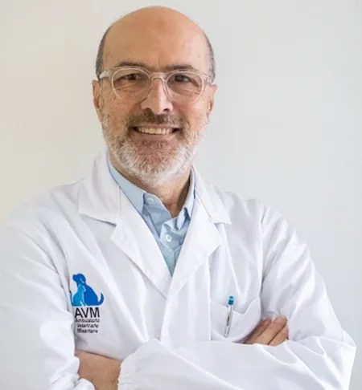

Pasquale Misantone
Nato a Teramo e laureato presso la facoltà di medicina veterinaria di Bologna nel 1991. Dopo il periodo di tirocinio pratico presso la facoltà di Medicina Veterinaria di Bologna, ha frequentato per alcuni anni l'ambulatorio veterinario del dottor Vincenzo Di Giacinto a Roseto degli Abruzzi, affiancando uno dei più bravi medici veterinari presenti sul territorio.
Dal 1993 ha frequentato i laboratori dell'Istituto Zooprofilattico Sperimentale di Teramo, dapprima come volontario poi ha lavorato con contratti a tempo determinato nella formazione, prevenzione e tecniche di laboratorio di batteriologia affiancando la dottoressa Elisa di Giannatale. Ha lavorato anche nella Sala anatomo patologica con il dottor Massimo Scacchia e il tecnico Gianfranco Romeo e nel centro di fecondazione artificiale con il dottor Nicola Ferri.
Inoltre vanta uno stage mensile in Francia presso L'Aigle in Normandia, per la fecondazione artificiale e l'embriotransfer sugli animali da reddito e gli animali di affezione. Ha partecipato anche a numerosi corsi di formazione come membro iscritto alla SCIVAC, la società culturale italiana dei veterinari per animali da compagnia.